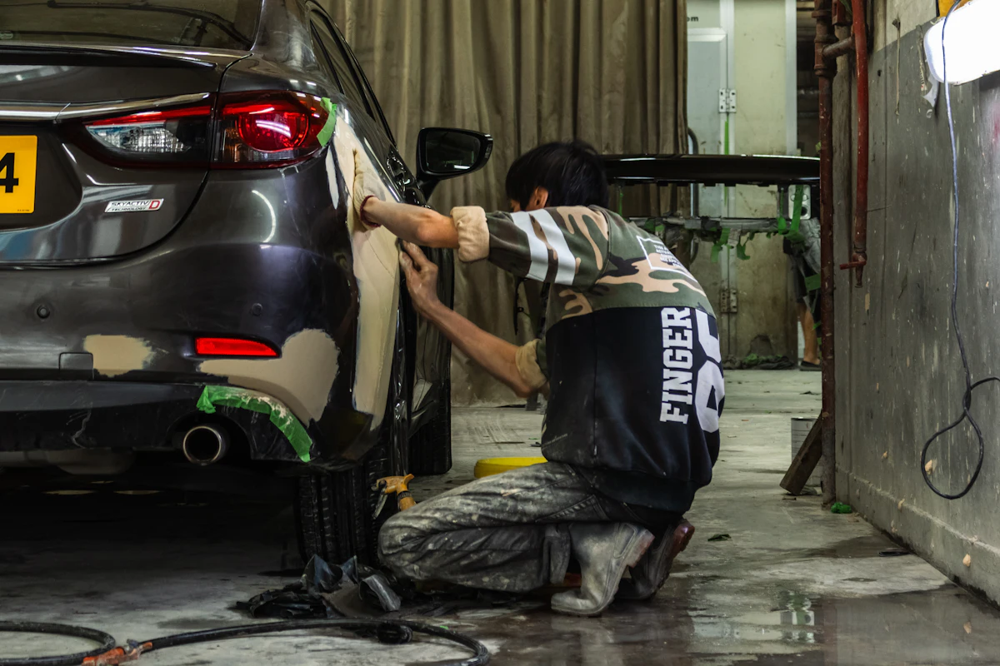
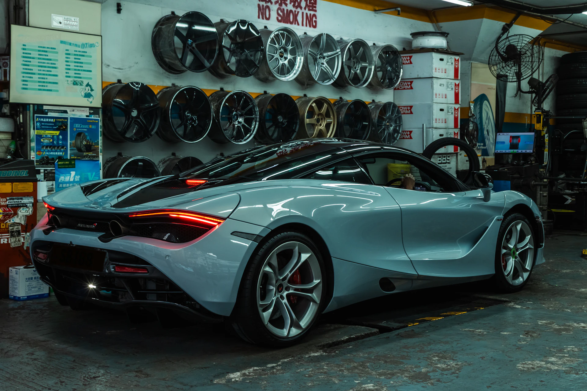
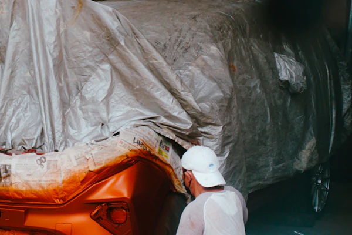
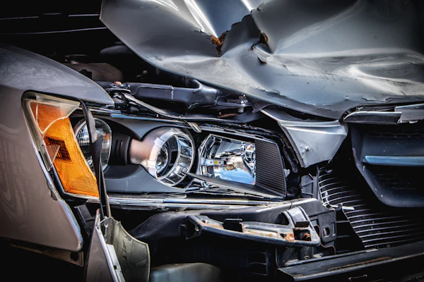
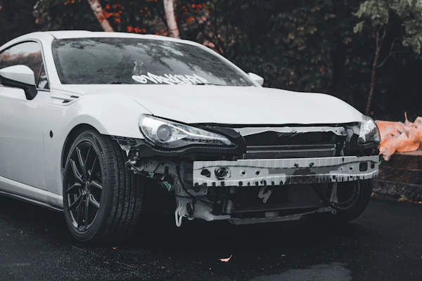
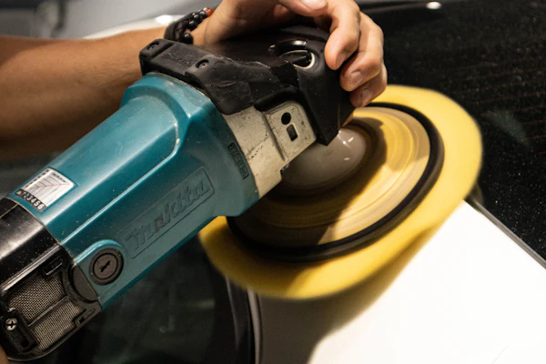
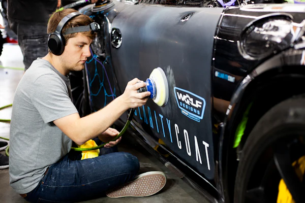
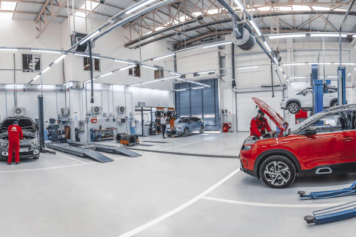
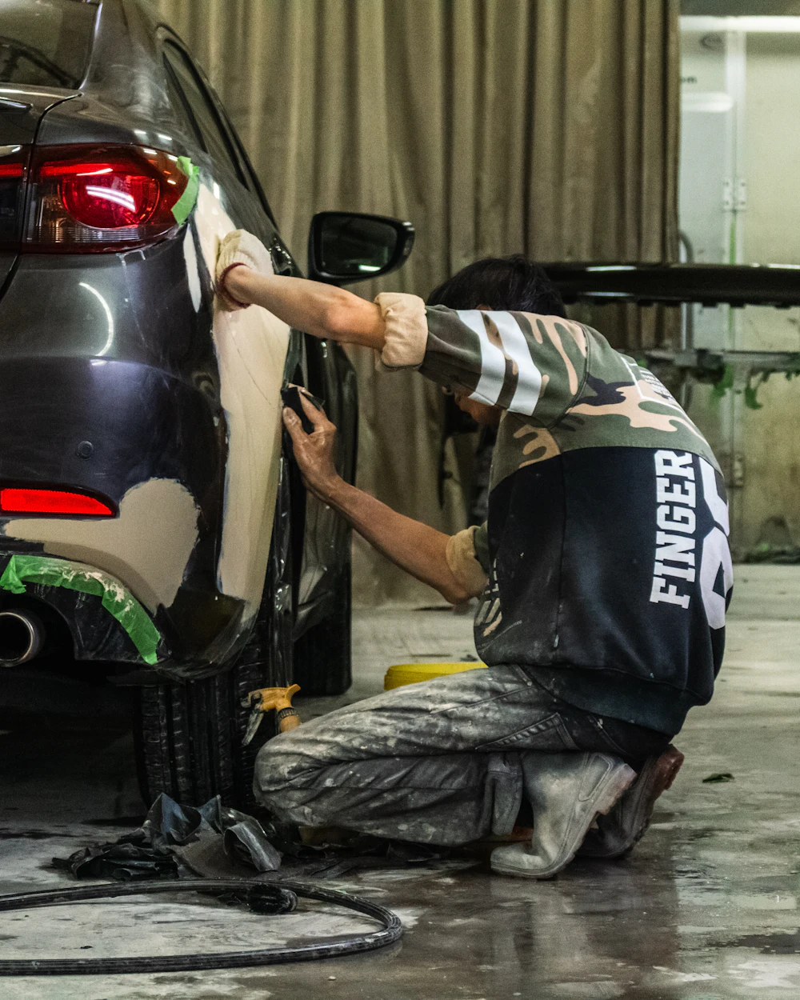

תמונת המחשה
01
תיקוני פחחות לרכב
יישור ושיקום חלקי פח שנפגעו – דלתות, כנפיים, מכסה מנוע ותא מטען – בעבודה מדויקת שמחזירה למרכב את הקווים המקוריים שלו.
לתיאום בדיקה
מוסך פחחות וצבע בראשון לציון
מחזירים לרכב שלכם את המראה המושלם.
תיקוני פחחות, צביעה ותיקוני תאונות בעבודה מוקפדת, בשקיפות מלאה וביחס אישי – מהבדיקה הראשונה ועד שהרכב חוזר אליכם מבריק.
השירותים שלנו
פחחות וצבע בראשון לציון: משריטה קטנה ועד תיקון אחרי תאונה – כל רכב מקבל אבחון מדויק, תיקון מקצועי וגימור שמחזיר לו את המראה המקורי.

תמונת המחשהיישור ושיקום חלקי פח שנפגעו – דלתות, כנפיים, מכסה מנוע ותא מטען – בעבודה מדויקת שמחזירה למרכב את הקווים המקוריים שלו.
לתיאום בדיקה
תמונת המחשהצביעת חלקים או רכב שלם, עם הכנה יסודית של המשטח, התאמת גוון לצבע המקורי וגימור אחיד ומבריק.
לתיאום בדיקה
תמונת המחשהטיפול מלא ברכב אחרי תאונה – מאבחון הנזק ופירוק, דרך תיקון ויישור המרכב, ועד צביעה והרכבה מחדש.
לתיאום בדיקה
תמונת המחשהתיקון או החלפה של פגושים, כנפיים, דלתות, מכסי מנוע וחלקי מרכב נוספים, כולל התאמה, הרכבה וצביעה.
לתיאום בדיקה
תמונת המחשהשריטות, שפשופים, מכות חניה ושקעים קטנים – תיקון נקודתי ומדויק, כך שהפגיעה כמעט לא תורגש.
לתיאום בדיקה
תמונת המחשהצבע דהוי, עייף או פגוע מהשמש? חידוש וליטוש שמחזירים לרכב עומק, ברק ומראה רענן.
לתיאום בדיקה
תמונת המחשהליווי בתהליך מול חברת הביטוח אחרי תאונה – מהערכת הנזק ועד תיקון הרכב, כדי שתתעסקו כמה שפחות בבירוקרטיה.
בכפוף לאישור פרטי השירות
לבירור פרטיםאיך זה עובד
אנחנו מאמינים שלקוח שמבין מה קורה עם הרכב שלו – הוא לקוח רגוע. לכן כל שלב מוסבר מראש.
מתקשרים או שולחים וואטסאפ – אפשר לצרף תמונות של הנזק כבר בפנייה הראשונה.
בודקים את הרכב במוסך, מאבחנים את היקף הנזק ומסבירים מה צריך לעשות ולמה.
עבודת פחחות, הכנה לצבע, צביעה וגימור – בהקפדה על כל פרט ובעדכון שוטף.
בדיקה סופית של התיקון, הגימור והגוון – ורק אז הרכב חוזר אליכם.
גלריה
שימו לב: התמונות המסומנות "תמונת המחשה" הן תמונות להמחשה בלבד ממאגר תמונות חופשי, ואינן עבודות של מוסך יוני. תמונות של עבודות אמיתיות מהמוסך יתווספו בקרוב.

תמונת המחשהאודות המוסך
במוסך יוני, ברחוב פלוטיצקי 3 בראשון לציון, אנחנו מתמחים בפחחות וצבע לרכב. אנחנו יודעים שהרכב הוא הרבה יותר מאמצעי תחבורה – ושכל שריטה, מכה או תאונה הם עניין מעצבן שאתם רוצים לסגור מהר ובראש שקט.
לכן אנחנו עובדים בשלוש מילים פשוטות: מקצועיות, שקיפות ויחס אישי. מסבירים לפני שמתחילים, מעדכנים לאורך הדרך, ומוסרים את הרכב רק כשאנחנו בעצמנו מרוצים מהתוצאה.
שאלות נפוצות
מוסך יוני נמצא ברחוב פלוטיצקי 3 בראשון לציון. אפשר לנווט אלינו ישירות ב-Google Maps או ב-Waze דרך כפתורי הניווט באתר, או להתקשר למספר 053-4338601.
קודם כול לוודא שכולם בטוחים. לאחר מכן כדאי לצלם את הרכבים ואת זירת התאונה, להחליף פרטים עם הנהג השני ולדווח לחברת הביטוח. אחר כך צרו איתנו קשר – נשמח לבדוק את הרכב ולהסביר את האפשרויות.
זה תלוי בהיקף הנזק: תיקון שריטה או מכה קטנה יכול להיות קצר, ותיקון אחרי תאונה עשוי לדרוש יותר זמן. אחרי בדיקת הרכב נוכל לתת לכם הערכת זמן מסודרת.
כן, אפשר לשלוח תמונות בוואטסאפ ונחזור אליכם עם הכוונה ראשונית. הערכה מדויקת ניתנת רק אחרי בדיקה של הרכב במוסך, כי חלק מהנזקים לא נראים בתמונה.
התאמת הגוון היא חלק מרכזי בעבודת הצבע. הגוון נקבע לפי צבע הרכב, ובמקרים רבים נדרשת גם התאמה לחלקים הסמוכים כדי לקבל מראה אחיד.
לפעמים כן. שריטות שטחיות אפשר לעיתים לטפל בליטוש, ושריטות עמוקות יותר דורשות תיקון וצבע. נבדוק את הרכב ונמליץ על הפתרון שמתאים לנזק.
צור קשר
התקשרו, שלחו וואטסאפ או נווטו אלינו – נשמח לבדוק את הרכב ולתת לכם תשובה ברורה.
053-4338601
053-4338601
פלוטיצקי 3, ראשון לציון
מפת הגעה למוסךהמפה תוצג כאן אוטומטית לאחר הזנת כתובת המוסך בקובץ ההגדרות.
שלחו תמונה בוואטסאפ או התקשרו – ונתאם לכם בדיקה.